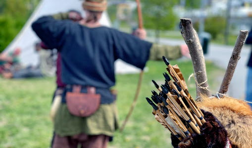
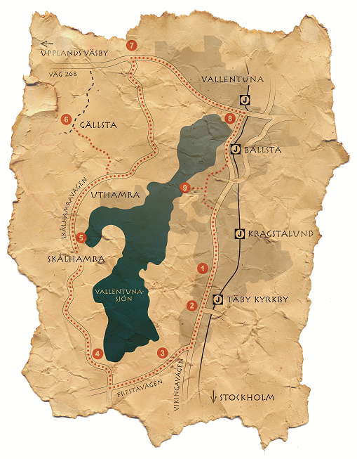

Startsidan

Runrikets Vikingahelg
Runrikets vikingahelg arrangeras 2027 i Täby kommun, mer information kommer.


Välkommen till Runriket
Runriket är ett samarbete mellan Vallentuna och Täby kommun och består av nio kulturhistoriska platser runt Vallentunasjön. Runriket syftar till att uppmärksamma det kulturhistoriskt världsunika området.
